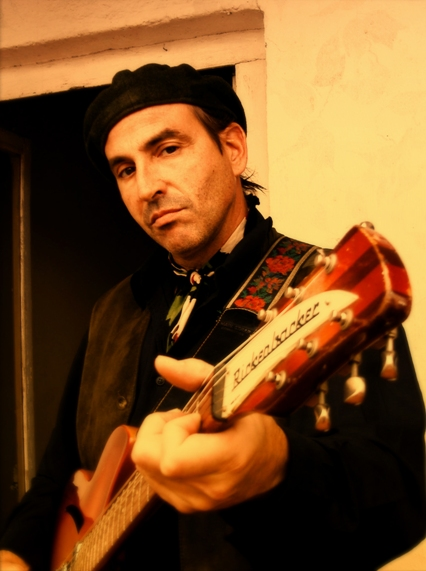

Paul Collins Beat

Genre: punk rock
Location: New York New York
Member since: January 17, 2007
Status: Regular Member
Webpage: http://www.paulcollinsbeat.com
Wednesday, January 17, 2007
Paul Collins Beat' speaks: New CD Flying High
"Flying High" is the eleventh Paul Collins' Beat album since The Paul Collins' Beat features twelve all-new songs written at different points in Paul Collins' life. Visitors to the official Paul Collins' Beat website www.paulcollinsbeat.com can preview and purchase the new studio album.
Ok folks here it is my first blog...we'll see how it goes, right now I'm at home playing my guitar trying to write new songs and keeping in shape by playing the old ones. Todays #1 is a new song called "It's The End Of Everything" I'm not sure but it might be inspired by my recent break up with my girlfriend of 1 year. This past year has been better than most, professionally speaking as I have released a new record "Flying High" and I have been doing a ton of shows to support it. Those of you who know me, know that I took a lot of time off...almost 10 years with out a record! That was due to a lot of different reasons...raising a kid....working a straight job to feed him and my ex-wife...but mainly lack of inspiration. Lately we have been playing out in Europe and it's been a blast...Rome London Rotterdam and next up is Stockholm. For my US friends and fans Get Hip, a very cool label from Pittsburg will be releasing my new record sometime in the beggining of next year, they also plan to re-issue, again, my first 2 CBS records, The Beat and The Kids Are The Same. I must say that I feel like I have been blessed to have made some really good records, and I feel if after 25 years people still wanna hear a record that it's gotta be good. speaking of 25 years The Nerves re-issue should also be coming out early next year on Alive Records which is poetic justice as they are part of Bomp Records who did the 2nd pressing of the E.P. way back in 1974 or 5, which enabled the band to make our historic self-produced national tour. While we are on the subject of history, my first book, which might well be my last, time will tell, is going to be published by a very cool Spanish boutique publisher called Gamuazule, which means blue suede. They have published books by Dave Alvin, Steve Earle and are working on a translation of Bukowsky...yes it will be in Spanish so I probably won't be able to read it myself...life is funny isn't...but they are trying to get me an American publisher which is as hard or harder that trying to get a record deal...to be continued....
posted by Paul Collins' Beat